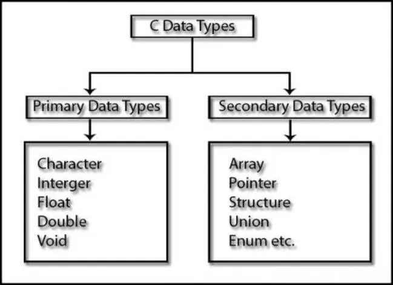
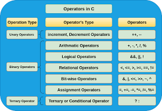
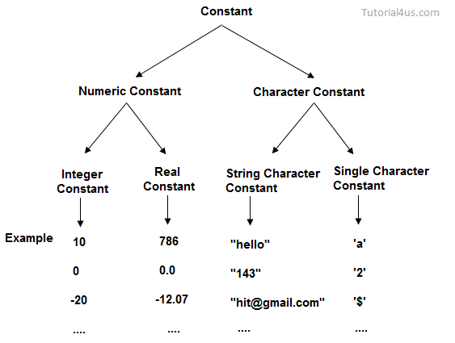
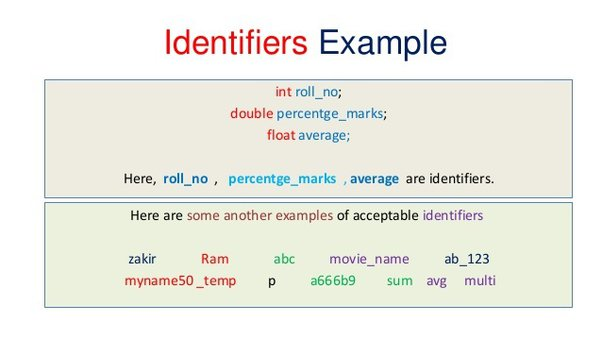
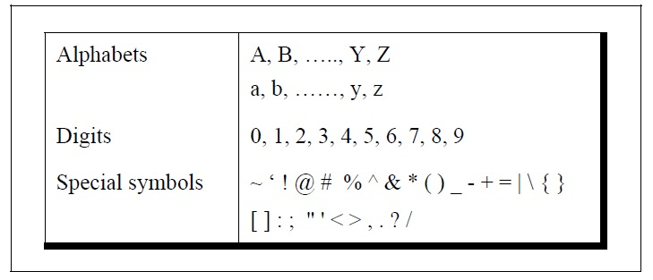

C is a programming language and this is the few points in C.
- C Introduction
- History of C
- Features of C
- Datatypes
- Tokens
- Examples of C
1. C is a programming language.this is use to write a programe and exicute them.
2.there are two types of language one is lower lavel language and second is higher
level language(english).
3 lower leval language intract with computer hardware asembly language.
4.higher level language is a human leval understable.
5.C language is a middle level language because it combines the both features of
high level language.
software-TURBO C(TC) this is also called as compiler.
C is a programming language.developed at ATs and T bell laboratory of USA in 1972. It was
written and disign by DENIS RITCHIE.
a)In the 1960 ALGOL Language is difined by International comittee.
b)In the 1963the CPLlanguage is difined.It is the combine programming language.
c)In the 1967 the BCPL language is difined. It is the basic combine programming language
.
d)In the 1970 the B language is difined.It is the previous language of C.
e) in the 1972 the C language is difined.it is written by dinies Ritchie.this language is
the simple and easy to use language.
and then 1978 the K and RC languages are difined.

I) C is a popular language beacuse of its relability,simplicity and easy to use.
II) C is a ifficient,strong and relable language.
III) The working speed of C is very good.
IV)C provides intraction to hardware.
V)It is portable means executing the same application on different systems.
VI)C language is the case sensitive language.
VII)We can write various virases ans anti-viruses in C language.
VIII)C is also called as procedure oriented programming language (POP)
here is the example of C language

In C language mainly two Datatypes. first is primary Data types,and other is secondary
data types.
In primary data types four data types include.
A) PRIMARY DATA TYPE B) SECONDARY DATA TYPE
1.Integer a)array
2.float b)pointer
3.character c)structure
4.void d)Union
1) Integer:-
Integer allows to store integer value only no decimal points are allowed.It can be positive
or negative.It can declared as 'int'
Ex:-10,50,-150,-120 etc.
Integer data type 2 byte memory is alocated.
2) float :-
Float data type are stored only floating points value.The value should be with a decimal
point .
Ex:-10.2,13.6,22.2,etc.
float data type 4 byte memory is alocated.
3)character:-
character data type is used to store a single character.
Ex-a,b,d,g etc.
character data type 1 byte memory alocated.

C Tokens is difined as the smalles individual unit in 'C' programme.
there are 6 types of tokens.
1.keyword
2.identifier
3.constant
4.string
5.special symbols
6.opertores

1. Keyword:-
keywords are also known as reserved word.the meaning of this words are predifined in
compiler. there are total 32 keywords available in C language.these keyword can not be
use to
declared variable.

2. operators:-
it is use to operate a operation like addition,substraction,multiplication and division.
eg.,+-/=<>&%

3. constant:-
constant is use to declare a constant value like 1,2,3,10.3,0.2
eg.,10,3,4,5,17.4,66 etc.

4.string:-
string is token that locate a full word like a "amrut""virat".
eg., rahul,amrut,maharashtra,etc.

5. identifier:-identifier is a collocation of alpha numericals characters.Identifier
are use to give
name to the programming element like variable,array,function structure
identifier is formed by combination of upper case,lower case and under score
symbols.

6. special symbols:-
#,!,@,%,{},[],: this is the special symbols in C.

1. hello word programe in C:-
#include
#include
void main()
{
clrscr();
printf("print hello");
getch()
}
2.your bio data in C:-
#include
#include
void main()
{
clrscr();
printf("\n type your name");
note:\n is the function who create a new line
printf("\n enter your class");
printf("\n enter your address");
printf("\n enter your college/school name");
printf("/n enter your mobile number");
getch();
}